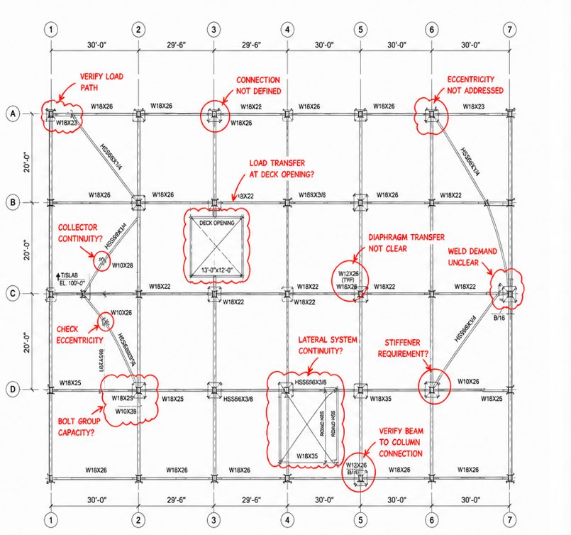

Structural design review for public agencies and project teams
Better reviews for buildings that deserve more than a checklist.
First Line Structural helps cities, municipalities, architects, owners, and design teams identify structural risk early—before complex details become permit delays, RFIs, field conflicts, or long-term performance issues.
Review in practice
Focused comments where coordination, load path, and constructability matter.
Our review process looks for the project-specific conditions that may deserve a closer look: unclear transfer points, connection assumptions, diaphragm behavior, system continuity, and details that may create field questions if left unresolved.
Example graphic shown as a representative review-markup style, not a project-specific engineering determination.
